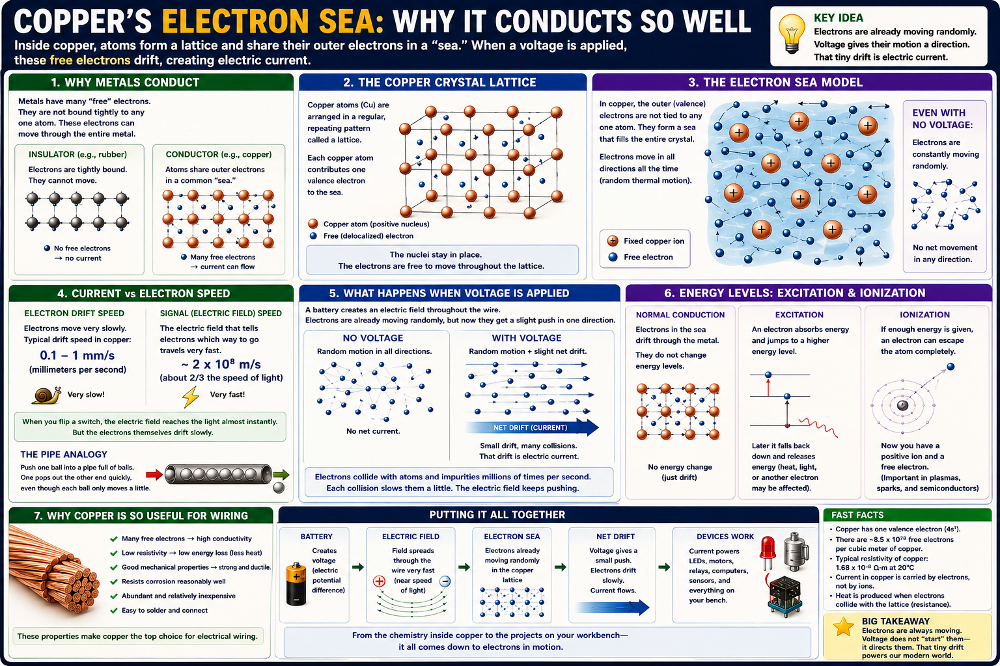

Atoms stay in an ordered framework
Copper nuclei occupy regular positions in a crystal lattice. They vibrate, but they do not stream down the wire.
Electronics · Materials · Current · Signals
A lesson for Klins on why copper conducts so well, what actually moves in a wire, why current starts quickly even though electrons drift slowly, and how the same copper appears everywhere in our ecosystem—from twisted pair and jumper wires to Raspberry Pi headers, PCB foil runs, relay boards, and power rails.

Metallic bonding leaves some electrons free to move through the whole structure.
Copper nuclei occupy regular positions in a crystal lattice. They vibrate, but they do not stream down the wire.
Copper’s outer electrons are delocalized. They belong to the metal as a whole rather than remaining attached to one atom.
Without voltage, electron motion is random. With an electric field, that motion gains a tiny average direction.
Electrons do not wait motionless inside a wire until a switch closes. They are already moving randomly. The switch establishes an electric field through the circuit, and that field organizes a small net drift.
The electrons move slowly, but the electrical effect travels quickly.
In ordinary copper wiring, the average drift speed may be only fractions of a millimeter per second. Individual electrons collide constantly with the lattice.
When the circuit is energized, the electric field spreads through the conductors at a large fraction of the speed of light. That is why a lamp responds almost immediately.
A useful model for understanding why distant electrons begin moving quickly.
Push one ball into a tightly packed pipe and a ball at the far end moves out almost immediately, even though no individual ball traveled the entire length.
Copper already contains mobile electrons everywhere along its length. The electric field nudges the whole population into a coordinated drift.
The same material principle appears in every layer of the bench.
Copper traces distribute 5 V, 3.3 V, and ground across the board. The GPIO header pins connect those copper paths to jumper wires and external circuits.
A GPIO output changes voltage on a copper trace. That electric field propagates through the jumper wire to a sensor, transistor, relay input, or logic gate.
High-speed signals travel through carefully designed copper paths whose geometry controls impedance, noise, and timing.
Printed circuit boards use thin copper foil bonded to fiberglass. Etching removes unwanted copper and leaves the exact conductive paths that connect components.
Large copper areas provide low-resistance return paths, improve signal integrity, and help spread heat.
Copper plating connects traces between PCB layers and creates reliable electrical paths through the board.
The conductor material matters, but geometry matters too.
A twisted pair usually carries a signal on one conductor and its return or complementary signal on the other.
The pair continually swaps position relative to outside noise sources. Interference tends to affect both wires similarly and can be rejected by differential receivers.
Ethernet cable, telephone wiring, RS-485, CAN bus, balanced audio, and many sensor links use twisted copper pairs.
Good conduction does not guarantee a good signal. Length, spacing, twisting, shielding, return path, impedance, and grounding all shape what happens to the electric field.
Different copper forms solve different construction problems.
Thin, flat copper foil creates compact, repeatable connections. Width and thickness determine how much current a trace can safely carry.
Flexible insulated copper lets us reconfigure experiments quickly. Longer, thinner wires add more resistance and pick up more noise.
Spring contacts grip component leads and jumper wires. Copper-based conductors carry the signal, while contact quality determines reliability.
Copper does more than carry signals—it also creates magnetic fields.
Current through many turns of copper wire creates a magnetic field that moves the relay armature.
Copper windings produce magnetic fields that interact with permanent magnets or other coils to create torque.
Copper windings store energy in magnetic fields and transfer energy between circuits.
Copper is excellent, but it is not perfect.
Drifting electrons collide with the vibrating lattice, defects, and impurities.
Electrical energy becomes thermal energy when current passes through resistance.
Thicker copper has lower resistance. Long or thin conductors lose more voltage and produce more heat for the same current.
Its success comes from a useful combination of properties.
Mobile electrons move charge efficiently.
Copper can be drawn into long, thin wires without breaking.
Copper bonds readily with common solders, making strong electrical joints practical.
Copper forms surface oxides but remains durable in many environments.
Copper also moves heat well, which is useful in heat spreaders and thermal paths.
It is abundant enough to be practical for widespread electrical use.
Simple projects for making copper’s behavior visible.
Compare short and long pieces of the same wire with a meter and observe how resistance rises with length.
Use equal lengths of thin and thick copper wire and compare voltage drop under load.
Run the same low-level signal through twisted and untwisted pairs near a noise source and compare stability.
Follow one GPIO function from processor pin to PCB trace, header pin, jumper wire, breadboard rail, and load.
Compare thin signal traces, wider power traces, ground fills, and vias on a scrap or unused board.
Energize a safe low-voltage relay coil and connect electron flow in copper to the magnetic force that moves the mechanism.
Copper is the physical road system of our electronics. The Raspberry Pi computes in silicon, but copper carries its power, returns its current, transports its signals, forms its PCB traces, connects its headers, winds its relays, and links the whole bench into one functioning system.